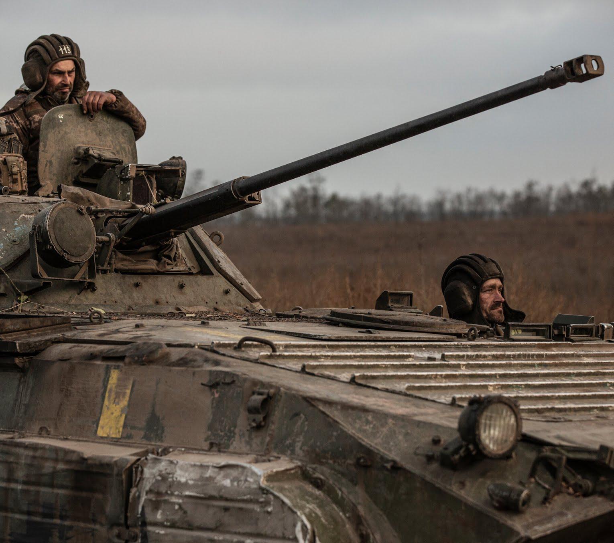

<!DOCTYPE html>
<html>
    <head>
        <meta charset="UTF-8">
        <title>internacional</title>
        <style>
            img {
                max-width: 100%;
                height: auto;
            }
        </style>
               <script type="text/javascript">
    document.oncontextmenu = function() {
        alert("No puedes copiar contenido de esta página");
        return false;
    }
    document.onkeydown = function(e) {
        if (e.ctrlKey && (e.keyCode === 67 || e.keyCode === 65 || e.keyCode === 88)) {
            alert("No puedes copiar contenido de esta página");
            return false;
        } else {
            return true;
        }
    }
</script>
    </head>
    <meta name="viewport" content="width=device-width, initial-scale=1.0">
</html>
<article><h2>A pesar de las victorias, la guerra de Ucrania está lejos de terminar</h2></article>
<p>Ucrania está a la ofensiva a lo largo de gran parte de la línea del frente de 965 kilómetros, y los rusos están agazapados a la defensiva. Pero aproximadamente una quinta parte del territorio ucraniano sigue ocupado por Rusia.</p>
KIEV, Ucrania — Durante nueve meses de una guerra salvaje y sangrienta, el ejército ucraniano ha desafiado todas las dificultades y todas las expectativas en combates, tanto en el bosque como en el campo y las ciudades, y ha hecho que Rusia tenga que retroceder muchas veces.</p>
<p>Pero, a pesar de su éxito y con decenas de miles de soldados muertos de cada bando, según un cálculo, Ucrania solo ha recorrido la mitad del camino: su ejército nada más ha recuperado cerca del 55 por ciento del territorio ocupado por Rusia después de su invasión en febrero.</p>
<p>Ucrania está a la ofensiva en casi la mayor parte de un frente de batalla de 965 kilómetros. Rusia está a la defensiva en el sur y el noreste al tiempo que continúa sus ataques hacia Bajmut, una ciudad del este.</p>
<p>El éxito de Ucrania ha llevado a la guerra a una coyuntura trascendental. Al estar a la ofensiva, puede configurar la próxima fase del combate y decidir si aprovecha su ventaja y avanza más hacia el territorio ocupado por Rusia o se asienta para el invierno como, según los analistas militares, le gustaría hacer a las tropas del Kremlin.</p>
<p>Si Ucrania sigue adelante, enfrentará importantes dificultades: aunque ha logrado que más combatientes rusos estén en un espacio más reducido, esto significa que las próximas batallas serán contra un territorio más densamente defendido en un terreno complicado.</p>
<p>Ahora Ucrania está combatiendo en botes en las marismas y las islas deltaicas de la parte baja del río Dniéper; está luchando en muchas líneas de trincheras en las llanuras nevadas de la región de Zaporiyia, en el sur; y está participando en un combate sangriento y oscilante en bosques de pinos a lo largo de la llamada línea Svátove-Kreminná, en el noreste de Ucrania.</p>
<p>Este mes, después de que los rusos se retiraron de Jersón, el presidente ucraniano Volodímir Zelenski hizo una notable visita a esta ciudad, la única capital de provincia capturada por las fuerzas rusas. Al izar una bandera de Ucrania en un edificio gubernamental, hizo alusión a un famoso discurso de Winston Churchill tras la victoria británica en la Segunda Batalla de El Alamein en 1942.</p>
<p>Churchill había declarado “el final del principio” del conflicto, mismo que se prolongaría durante otros tres años. Zelenski trató de darle un giro a ese discurso.
“Este es el principio del final de la guerra”, señaló.
No obstante, una quinta parte del territorio ucraniano sigue ocupado por los rusos.</p>

<p>Brayan Camilo Gomez</p>
   </div>
   